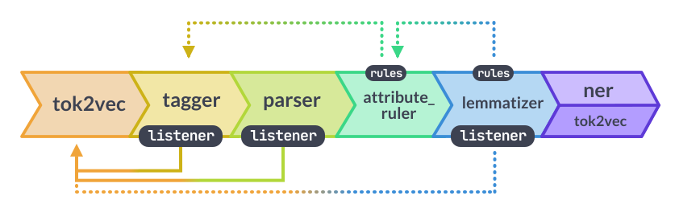

Computationel tekstanalyse
2026-09-22
Tekst som data
Korpus
Landskabet (hvad kan man med computationel tekstanalyse?)
Ordbogsmodeller
Sprogmodeller
Klyngemodeller: PCA og k-means
Øvelser/Portfolio
Indlæg og nyheder fra seks danske højrefløjsmedier og -foreninger, indsamlet i 2022-2023.
Dansk Samling, Frihedens Stemme, Nordfront, SIAD, Trykkefrihed, Uriasposten
Nogle af siderne findes ikke længere.
Hvert datasæt er lavet med sin egen scraper. Formater og kolonner varierer.
Et udsnit på ca. 10% af det fulde materiale. Det fulde korpus er på 6.939 dokumenter og cirka 2,4 millioner ord.
Hvad er tekst egentlig, når vi tænker det i abstrakte termer?
"Hej med dig!"
Vi forstår øjeblikkeligt: det er en hilsen, det er på dansk, det er venligt.
"Hej med dig!"
↓
01001000 01100101 01101010 ...
↓
[72, 101, 106, 32, 109, 101, 100, ...]
↓
['H', 'e', 'j', ' ', 'm', 'e', 'd', ...]Computeren ser tal og symboler. Den “forstår” ingen betydning.
Alt, hvad vi laver i dag, handler om at bygge en bro fra det nederste niveau til det øverste … og få et kritisk blik for, hvor meget der går tabt undervejs.
I lektion 2, 3 og 6 byggede I små tekstanalyse:
Det er en bag-of-words-model. Rækkefølgen smides væk, og tilbage står en optælling.
Det er fundamentet under det meste af i dag.
| Kilde | Dokumenter | Overskrift | Dato | Format |
|---|---|---|---|---|
| Uriasposten | 3.024 | ja | nej | CSV |
| Frihedens Stemme | 1.554 | ja | ja | JSON |
| Nordfront | 1.216 | ja | ja | JSON |
| SIAD | 485 | nej | ja | JSON |
| Dansk Samling | 366 | ja | ja | JSON |
| Trykkefrihed | 294 | ja | nej | JSON |
Ingen af dem er forkerte. De er bare lavet af forskellige mennesker til forskellige formål.
Dansk Samling 31. december 2019
Frihedens Stemme 23. januar 2019
SIAD januar 1, 2019
Nordfront 2 februar, 2023
Trykkefrihed —
Uriasposten —Dag først, måned først, med og uden punktum, med og uden komma. Og to kilder uden dato overhovedet.
3.345 af 6.939 dokumenter har ingen dato. Det er 48 %.
Enhver analyse over tid kan altså kun bruge halvdelen af materialet … og det er ikke en tilfældig halvdel.
Uriasposten er 43 % af korpusset. Trykkefrihed er 4 %.
Tæller I et ord på tværs af hele materialet, måler I i praksis Uriasposten.
Trykkefrihed skriver i gennemsnit 715 ord per indlæg. Dansk Samling 184.
Alt, hvad I tæller per dokument, er dermed et udtryk for, hvem der har skrevet det.
Et korpus er et konstrueret objekt, ikke en objektiv repræsentation af sprog.
Designbeslutningerne afgør, hvilke spørgsmål der overhovedet kan besvares. De er ikke tekniske detaljer, der kommer før analysen, de er en del af analysen.
I dag er 1 million ord et lille korpus.
Vores fulde materiale er 2,4 millioner ord … Det er stadig lille.
Hvor kommer teksterne fra? Ét medie eller flere? Hvem har valgt netop dem?
Hvem har skrevet dem? Redigeret eller spontant? Én forfatter eller mange?
Hvilke teksttyper er med — og hvilke er ikke?
Hvad skete der under indsamlingen? Hvad blev der af formatering, billedtekster, kommentarer?
Kan folk efterprøve jeres analyse?
Materialet er indsamlet på fire forskellige tidspunkter i 2022 og 2023. Hvad gør det ved en sammenligning mellem kilderne?
Hvilket spørgsmål kan dette korpus ikke svare på, uanset hvor god metoden er?
Rå tekst kan man tælle ord i. Alt andet kræver, at nogen har tilføjet information.
Manuel kodning: mennesker læser og “mærker”/“tagger”. Dyrt, men stadig målestokken.
Automatisk annotering: en model tilføjer ordklasser, navne, sentiment. Hurtigt, men modellen har selv lært det et sted fra.
Spørgsmålet er aldrig, om annoteringen er perfekt. Det er, om fejlene er systematiske, for det flytter resultatet i én bestemt retning.
Macanovic (2022) inddeler feltet i fem:
I dag rører vi ved nummer 1 og lidt af nummer 3 og 5. Resten kommer mere i fokus på SDS2.
Deduktivt: I ved, hvad I leder efter. Ordbøger og superviseret klassifikatorer. Kategorierne er bestemt på forhånd.
Induktivt: I ved det ikke. Topic models og word embeddings “opdager” struktur, som I derefter skal fortolke.
Spörlein & Schlueter (2021): en tilpasset tysk hadtale-ordbog på 5.152 YouTube-kommentarer. Tidligere hadefulde kommentarer øger sandsynligheden for nye.
Törnberg & Törnberg (2016): topic models på 50 millioner svenske forumindlæg. Muslimer blev oftere forbundet med konflikt og vold online end i traditionelle medier.
Kozlowski et al. (2019): word embeddings på millioner af bøger over et århundrede. Sporede hvordan uddannelse gik fra at være forbundet med velstand gennem sofistikation til at være forbundet direkte.
Bonikowski & Nelson (2022): større datamængder kræver mere teori, ikke mindre.
En metodes værdi måles på de teoretiske indsigter, den frembringer … ikke på hvor stort datasættet var.
Computationel tekstanalyse kan ikke bare bruge teori, men også hjælpe med at bygge den.
Et topic model finder altid emner. Også i støj. Det er jer, der afgør, om de betyder noget.
Korpusvalidering: repræsenterer materialet det, I tror?
Metodisk validering: måler modellen det, I tror?
Når statistisk fit og fortolkelighed trækker i hver sin retning, skal der træffes et valg. Det valg hører i metodeafsnittet.
Indeholder tekster overhovedet målbare sociale fænomener?
Eller måler vi bare, hvordan folk skriver?
Det er ikke et spørgsmål, der bliver løst af et større datasæt.
En liste af ord, hver med en værdi. Man slår hvert ord op og lægger sammen.
Det er den mest gennemsigtige metodefamilie. I kan altid slå op, hvorfor en tekst fik sin score.
Det er også den mest restriktive. Modellen ved kun det, listen siger.
22 ord. Det er hele modellen.
ordbog.get(o, 0) er .get()-mønstret fra lektion 3. Findes ordet ikke, bidrager det med nul.
Over halvdelen af dokumenterne rammer ingen af de 22 ord.
For dem er scoren ikke “neutral”. Den er fraværende … og de to ting ligner hinanden i en tabel.
Det er ordbogsmodellers første og største problem, og det er usynligt, hvis man kun kigger på gennemsnittet.
Hvor mange ord skulle der til, før I ville stole på tallet?
Den anden får samme score som den første. Den tredje bliver stærkt positiv.
En ordbogsmodel lægger tal sammen. Den læser ikke.
Den samme idé, professionelt lavet. afinn er et Python-bibliotek med en dansk ordliste på cirka 3.500 ord, udviklet af Finn Årup Nielsen.
from afinn import Afinn
afinn = Afinn(language="da")
korpus["afinn"] = korpus["tekst"].map(afinn.score)Afinn(language="da") indlæser den danske ordliste. .score() gør præcis det samme som vores egen funktion: slår hvert ord op og lægger værdierne for ordrene sammen.
Hvis Nordfront scorer mere negativt end Dansk Samling, hvad har vi så vist?
Et tal fra en ordbogsmodel er ikke et resultat. Det er et udgangspunkt for en diskussion, som skal føres i metodeafsnittet.
Vi har et tal per dokument. Nu skal det blive til en analyse.
Fire skridt, og tre af dem handler om at finde ud af, om tallet betyder noget:
ord.groupby(level=0) grupperer på indekset, altså på dokumentet. Det er samme greb som da vi lagde scoren sammen.
En rå sum favoriserer lange tekster: jo flere ord, jo flere chancer for at ramme ordbogen. Trykkefrihed skriver 718 ord per indlæg, Dansk Samling 183.
| Rå sum | Per 1000 ord | |
|---|---|---|
| SIAD | 0,79 | 2,26 |
| Nordfront | 0,64 | 1,26 |
| Uriasposten | 0,47 | 2,98 |
| Dansk Samling | 0,45 | 2,50 |
| Frihedens Stemme | −0,36 | −1,06 |
| Trykkefrihed | −0,45 | −1,08 |
Nordfront går fra andenplads til femteplads. Uriasposten går fra en delt tredjeplads til førstepladsen.
Det er ikke data, der ændrer sig. Det er en beslutning om, hvad vi dividerer med.
Trykkefrihed: 84 %. Dansk Samling: 38 %.
Det er ikke en holdningsforskel. Det er en længdeforskel: Trykkefriheds indlæg er fire gange så lange, så ordbogen har fire gange så mange chancer for at ramme.
For de 62 % af Dansk Samlings tekster, hvor ordbogen ikke ramte, er scoren ikke neutral. Den findes ikke.
Er I enige med modellen? Hvor mange af de seks ville I have kodet anderledes?
At to kilder scorer negativt og fire positivt … men forskellene er små, og halvdelen af materialet bidrager slet ikke.
At rangordenen afhænger af, om vi normaliserer.
At dækningen varierer med en faktor to på tværs af kilder, og at den følger dokumentlængden.
Ingen af de tre er et resultat om højrefløjsmedier. De er alle tre resultater om ordbogen.
[EN ORDENTLIG MANUEL ORDBOG; BEDRE TEKST MATERIALE]
En ordbog kender kun de ord, den har på listen. En sprogmodel er trænet på store mængder tekst og kan generalisere til ord, den ikke har set før.
spaCy er et bibliotek til natural language processing — krydsfeltet mellem datalogi og korpuslingvistik.
Det giver tokenisering, lemmatisering, ordklasser, navngivne entiteter og grammatiske relationer. Også på dansk.
import spacy
nlp = spacy.load("da_core_news_sm")
doc = nlp("Regeringen fremlagde et nyt udspil om indvandring i København.")spacy.load() henter en model, ikke bare en funktion. da_core_news_sm er trænet på dansk nyhedstekst.
Teksten løber gennem en række trin, som hver tilføjer information:

Information per ord:
.text: ordet, som det står.lemma_: grundformen. fremlagde bliver til fremlægge.pos_: ordklassen. NOUN, VERB, ADJ, PROPN og så videre.is_stop: er det et stopord?.ents er de navngivne entiteter: personer (PER), steder (LOC), organisationer (ORG).
Det åbner en anden slags spørgsmål end ordoptælling: hvem bliver nævnt, hvor ofte, og sammen med hvad.
Det er indgangen til semantisk og netværksanalyse.
split()tekst = "Regeringens plan — den såkaldte 'løsning' — virker ikke!"
print(tekst.lower().split())
doc = nlp(tekst)
print([tok.text for tok in doc])Kør de to linjer og sammenlign. Hvad sker der med tankestregerne, anførselstegnene og udråbstegnet i hver af dem?
naive = [o for t in korpus["tekst"] for o in str(t).lower().split()]
lemmaer = [tok.lemma_.lower() for doc in nlp.pipe(korpus["tekst"].astype(str))
for tok in doc if not tok.is_punct]
print(len(set(naive)) / len(naive))
print(len(set(lemmaer)) / len(lemmaer))Begge linjer beregner leksikalsk diversitet: antal unikke ord divideret med antal ord i alt. Samme mål, samme korpus, to forbehandlinger.
Den naive version tæller god, God, god! og gode som fire forskellige ord.
Kør det. Hvor stor bliver forskellen … og hvilket af de to tal ville I skrive i en opgave?
[TODO]
asent: sentimentanalyseSamme idé som vores egen ordbog, men med en pipeline under sig. asent er udviklet af Kenneth Enevoldsen og findes på dansk.
import spacy, asent
nlp = spacy.load("da_core_news_sm")
nlp.add_pipe("sentencizer")
nlp.add_pipe("asent_da_v1")
doc = nlp("Det er en god beslutning for vores frihed.")
print(doc._.polarity)add_pipe() lægger et nyt trin til i pipelinen. Scoren ligger derefter i doc._.polarity.
| Sætning | Vores ordbog | asent |
|---|---|---|
| Det er en god beslutning for vores frihed | +5 | +0,79 |
| Det er ikke en god beslutning | +2 | −0,50 |
| Fantastisk. Bare fantastisk. | 0 | 0,00 |
Negationen virker. Vores egen ordbog gav plus for den anden sætning, fordi den bare lagde tal sammen.
Men fantastisk står ikke i den danske ordliste. Dækningsproblemet er ikke løst, det er flyttet.
doc = nlp("Det er ikke en god beslutning.")
for tok in doc:
if tok._.polarity.polarity != 0:
print(tok._.polarity)polarity=-2.22 token=god span=ikke en godasent fortæller, hvilket ord der drev scoren, og hvilket udsnit af sætningen den læste det i.
god er i sig selv positiv. Den bliver negativ, fordi ikke står foran. Det kan man slå efter.
Det er forskellen på et tal og et resultat, I kan forsvare.
korpus["tekst"] = korpus["tekst"].fillna("").astype(str)
korpus["asent"] = [doc._.polarity.compound
for doc in nlp.pipe(korpus["tekst"], batch_size=20)]
print(korpus.groupby("kilde")["asent"].mean().round(3))nlp.pipe() kører mange tekster igennem ad gangen. Tomme felter skal fjernes først … pipelinen vil ikke have NaN.
| Egen ordbog | asent |
|
|---|---|---|
| Ord i modellen | 22 | flere tusind |
| Dokumenter uden score | 109 af 240 | 8 af 240 |
| Håndterer negation | nej | ja |
| Forskel mellem kilderne | −1,1 til +3,0 | −0,12 til −0,02 |
Dækningen går fra 55 % til 97 %. Det er den store gevinst.
Men forskellene mellem kilderne bliver mindre, ikke større. Med den bedre model ligner de seks medier hinanden.
De to modeller er enige om fortegnet i 66 % af dokumenterne. Korrelationen er 0,31.
En tredjedel af materialet får altså modsat fortegn, alt efter hvilken model man vælger.
Hvilken af dem har ret?
Det kan man ikke afgøre ud fra tallene. Det kræver, at nogen læser et udsnit af teksterne og koder dem i hånden … og at man så måler modellerne op mod den kodning.
Det er den validering, Bonikowski & Nelson efterlyser. Og den er ikke lavet her.
Tyve dokumenter. Læs dem, og skriv for hvert enkelt, om I er enige med modellen.
Er I uenige i under fem, kan tallet bruges med forbehold. Er I uenige i over ti, måler modellen noget andet, end I tror.
Det tager tyve minutter, og det er forskellen på en metodesektion, der holder, og en der ikke gør.
Dokumentation: spaCy 101 | asent